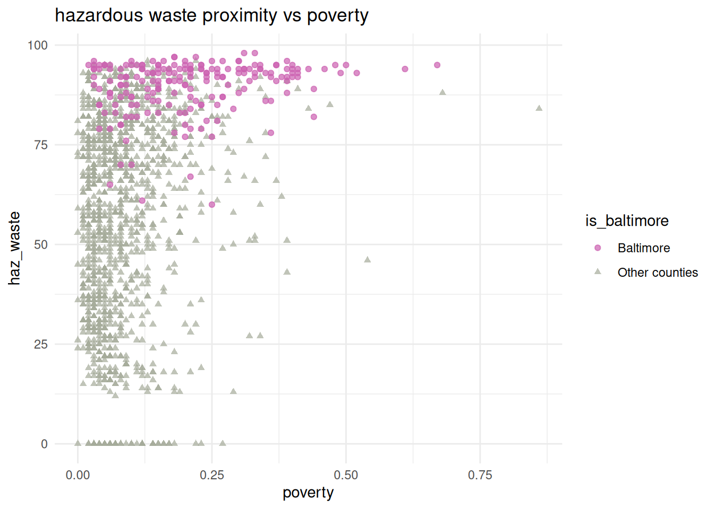

Merging data
Here are some notes on merging data from different data frames. A lot of the functions here come from dplyr, including all the *_join ones.
Types of joins
There are different types of joins that are defined by what data you want to keep and under what circumstances. These are consistent across many different languages (e.g. same terminology in R should apply in most/all SQL variants). The ones you’ll use most often are left joins and inner joins; when in doubt, a left join is safer than an inner join.
There’s an overly complicated chapter in R for Data Science on joins. There are some less complicated examples in the dplyr docs.

Imagine we’re joining two tables of data for counties A, B, C, D, and E, one row per county. The left table, housing, has housing information for each county but is missing County B. The right table, income, has income information for counties A, B, and E. That means there are a total of 5 counties, but only 2 of them are in both tables.
- Left join will include every county that’s in
housing, regardless of whether it’s also inincome.There will be a row for income variables, but their values will be NA. - Inner join will include every county that’s in both
housingandincome. - Right join is like left join: it will include every county that’s in
income, regardless of whether it’s also inhousing. - Full join will include every county in either table.
| county | homeownership | vacancy | poverty |
|---|---|---|---|
| A | 0.2655087 | 0.0201682 | 0.6291140 |
| C | 0.3721239 | 0.0898390 | NA |
| D | 0.5728534 | 0.0944675 | NA |
| E | 0.9082078 | 0.0660798 | 0.2059746 |
| county | homeownership | vacancy | poverty |
|---|---|---|---|
| A | 0.2655087 | 0.0201682 | 0.6291140 |
| E | 0.9082078 | 0.0660798 | 0.2059746 |
| county | homeownership | vacancy | poverty |
|---|---|---|---|
| A | 0.2655087 | 0.0201682 | 0.6291140 |
| E | 0.9082078 | 0.0660798 | 0.2059746 |
| B | NA | NA | 0.0617863 |
| county | homeownership | vacancy | poverty |
|---|---|---|---|
| A | 0.2655087 | 0.0201682 | 0.6291140 |
| C | 0.3721239 | 0.0898390 | NA |
| D | 0.5728534 | 0.0944675 | NA |
| E | 0.9082078 | 0.0660798 | 0.2059746 |
| B | NA | NA | 0.0617863 |
There are other joins that might be useful for filtering, but that don’t add any new columns. Semi joins return the rows of the left table that have a match in the right table, and anti joins return the rows of the left table that do not have a match in the right table. If you were making separate charts on housing and income, but wanted your housing chart to only include counties that are also in your income data, semi join would help.
Joining justviz datasets
| level | county | name | total_pop | ages00_17 | ages18_34 | ages35_64 | ages65plus | white | black | latino | asian | other_race | diversity_idx | foreign_born | total_hh | homeownership | total_cost_burden | total_severe_cost_burden | owner_cost_burden | owner_severe_cost_burden | renter_cost_burden | renter_severe_cost_burden | no_vehicle_hh | median_hh_income | ages25plus | less_than_high_school | high_school_grad | some_college_or_aa | bachelors | grad_degree | pov_status_determined | poverty | low_income | total_housing_units | total_vacant_units | units_for_rent | units_for_sale | seasonal_units | area_sqmi | pop_density |
|---|---|---|---|---|---|---|---|---|---|---|---|---|---|---|---|---|---|---|---|---|---|---|---|---|---|---|---|---|---|---|---|---|---|---|---|---|---|---|---|---|
| tract | Allegany County | 24001000100 | 3334 | 0.18 | 0.19 | 0.43 | 0.20 | 0.97 | 0.00 | 0.01 | 0.00 | 0.02 | 0.1104 | 0.00 | 1403 | 0.78 | 0.19 | 0.13 | 0.19 | 0.12 | 0.20 | 0.16 | 0.03 | 63415 | 2514 | 0.05 | 0.41 | 0.31 | 0.06 | 0.16 | 3328 | 0.13 | 0.32 | 2018 | 0.30 | 0.00 | 0.00 | 0.17 | 187.932766 | 17.74039 |
| tract | Allegany County | 24001000200 | 4030 | 0.12 | 0.23 | 0.45 | 0.20 | 0.75 | 0.17 | 0.03 | 0.00 | 0.04 | 0.4851 | 0.02 | 1343 | 0.90 | 0.19 | 0.16 | 0.18 | 0.15 | 0.29 | 0.24 | 0.05 | 67724 | 3118 | 0.15 | 0.48 | 0.26 | 0.08 | 0.03 | 2971 | 0.12 | 0.35 | 1553 | 0.14 | 0.00 | 0.00 | 0.07 | 48.072019 | 83.83255 |
| tract | Allegany County | 24001000500 | 2108 | 0.17 | 0.31 | 0.26 | 0.26 | 0.79 | 0.11 | 0.02 | 0.00 | 0.08 | 0.5130 | 0.02 | 786 | 0.58 | 0.36 | 0.18 | 0.18 | 0.08 | 0.62 | 0.31 | 0.23 | 34545 | 1363 | 0.13 | 0.41 | 0.31 | 0.09 | 0.06 | 1778 | 0.34 | 0.70 | 1147 | 0.31 | 0.05 | 0.03 | 0.00 | 4.422954 | 476.60452 |
| tract | Allegany County | 24001000600 | 2830 | 0.19 | 0.13 | 0.42 | 0.25 | 0.88 | 0.03 | 0.01 | 0.00 | 0.09 | 0.3323 | 0.01 | 1349 | 0.73 | 0.19 | 0.11 | 0.15 | 0.06 | 0.30 | 0.25 | 0.10 | 52250 | 2054 | 0.08 | 0.41 | 0.27 | 0.13 | 0.11 | 2720 | 0.13 | 0.42 | 1524 | 0.11 | 0.00 | 0.00 | 0.00 | 1.582466 | 1788.34855 |
| tract | Allegany County | 24001000700 | 3293 | 0.26 | 0.16 | 0.40 | 0.18 | 0.90 | 0.02 | 0.03 | 0.00 | 0.05 | 0.3152 | 0.04 | 1391 | 0.45 | 0.41 | 0.21 | 0.28 | 0.14 | 0.51 | 0.27 | 0.18 | 36673 | 2190 | 0.13 | 0.34 | 0.39 | 0.10 | 0.04 | 3293 | 0.39 | 0.62 | 1779 | 0.22 | 0.02 | 0.03 | 0.00 | 0.712350 | 4622.72767 |
| tract | Allegany County | 24001000800 | 1890 | 0.25 | 0.24 | 0.38 | 0.13 | 0.84 | 0.02 | 0.05 | 0.01 | 0.08 | 0.3762 | 0.01 | 816 | 0.47 | 0.44 | 0.19 | 0.32 | 0.15 | 0.55 | 0.23 | 0.21 | 28056 | 1172 | 0.10 | 0.44 | 0.35 | 0.07 | 0.05 | 1887 | 0.38 | 0.64 | 1052 | 0.22 | 0.06 | 0.00 | 0.00 | 1.263143 | 1496.26735 |
| tract | indicator | value_ptile | d2_ptile | d5_ptile |
|---|---|---|---|---|
| 24001000100 | pm25 | 7 | 8 | 9 |
| 24001000100 | ozone | 11 | 11 | 12 |
| 24001000100 | diesel | 15 | 17 | 17 |
| 24001000100 | toxic_air_release | 44 | 41 | 51 |
| 24001000100 | traffic | 13 | 15 | 15 |
| 24001000100 | lead_paint_exposure | 61 | 53 | 63 |
ACS data has several geographies, including census tracts (I’ve subset for just tract data). Their ID (GEOID, or FIPS codes) are in the column name. The EPA data is only by tract, and its column of IDs is labeled tract. So we’ll be joining name from acs_tract with tract from ej_natl.
There are 15 tracts that are included in the EPA data but not the ACS data. That’s because those are tracts with no population that I dropped from the ACS table when I made it. I can check up on that with an anti-join (not running this here but it confirms that these are all zero-population tracts). This was true with 2022 ACS and previous EJSCREEN data, but no longer the case. I’ll leave it here as an example of how to handle something similar when it does come up.
There’s another hiccup for merging data here: the ACS data is in a wide format (each variable has its own column), while the EPA data is in a long or tidy format (one column gives the indicator, then different types of values have their own columns). Those formatting differences could be awkward because you’d end up with some values repeated. The easiest thing to do is select just the data you’re interested in, either by selecting certain columns or filtering rows, then reshape, then join.
Let’s say I’m interested in the relationship, if any, between demographics and a few waste-related risk factors (proximity to wastewater, hazardous waste, and superfund sites). I’ll filter ej_natl for just those indicators and reshape it so the columns have the value percentiles for each of those two risk factors (not the adjusted percentiles). Then I’ll select the columns I want from acs, then join them.
The tidyr::pivot_wider and tidyr::pivot_longer functions can be confusing, but there are some good examples in the docs and a lot of Stack Overflow posts on them. Basically here I’m reshaping from a long shape to a wide shape, so I’ll use pivot_wider.
| tract | indicator | value_ptile | d2_ptile | d5_ptile |
|---|---|---|---|---|
| 24001000100 | superfund | 57 | 64 | 70 |
| 24001000100 | haz_waste | 14 | 18 | 17 |
| 24001000100 | wastewater | 79 | 63 | 78 |
| 24001000200 | superfund | 87 | 77 | 90 |
| 24001000200 | haz_waste | 26 | 34 | 41 |
| 24001000200 | wastewater | 67 | 65 | 81 |
| tract | superfund | haz_waste | wastewater |
|---|---|---|---|
| 24001000100 | 57 | 14 | 79 |
| 24001000200 | 87 | 26 | 67 |
| 24001000500 | 77 | 27 | 47 |
| 24001000600 | 86 | 33 | 50 |
| 24001000700 | 84 | 43 | 52 |
| 24001000800 | 81 | 62 | 58 |
Then the columns I’m interested in from the ACS data (For good measure, I’ll also add a variable to indicate that a tract is in Baltimore city). I’m going to take another step and drop rows with any missing values.
| name | county | total_pop | white | poverty | foreign_born | homeownership | is_baltimore |
|---|---|---|---|---|---|---|---|
| 24001000100 | Allegany County | 3334 | 0.97 | 0.13 | 0.00 | 0.78 | Other counties |
| 24001000200 | Allegany County | 4030 | 0.75 | 0.12 | 0.02 | 0.90 | Other counties |
| 24001000500 | Allegany County | 2108 | 0.79 | 0.34 | 0.02 | 0.58 | Other counties |
| 24001000600 | Allegany County | 2830 | 0.88 | 0.13 | 0.01 | 0.73 | Other counties |
| 24001000700 | Allegany County | 3293 | 0.90 | 0.39 | 0.04 | 0.45 | Other counties |
| 24001000800 | Allegany County | 1890 | 0.84 | 0.38 | 0.01 | 0.47 | Other counties |
So each of these two data frames has a column of tract IDs, and several columns of relevant values. I only want tracts that are in both datasets, so I’ll use an inner join. Remember that any tracts that are only in one data frame get lost by an inner join—always check for this so you don’t lose data that you need. In this case, you can see that now we only have 1,456 rows, down from the 1,460 earlier.
| name | county | total_pop | white | poverty | foreign_born | homeownership | is_baltimore | superfund | haz_waste | wastewater |
|---|---|---|---|---|---|---|---|---|---|---|
| 24001000100 | Allegany County | 3334 | 0.97 | 0.13 | 0.00 | 0.78 | Other counties | 57 | 14 | 79 |
| 24001000200 | Allegany County | 4030 | 0.75 | 0.12 | 0.02 | 0.90 | Other counties | 87 | 26 | 67 |
| 24001000500 | Allegany County | 2108 | 0.79 | 0.34 | 0.02 | 0.58 | Other counties | 77 | 27 | 47 |
| 24001000600 | Allegany County | 2830 | 0.88 | 0.13 | 0.01 | 0.73 | Other counties | 86 | 33 | 50 |
| 24001000700 | Allegany County | 3293 | 0.90 | 0.39 | 0.04 | 0.45 | Other counties | 84 | 43 | 52 |
| 24001000800 | Allegany County | 1890 | 0.84 | 0.38 | 0.01 | 0.47 | Other counties | 81 | 62 | 58 |
[1] 1456
Is there a pattern? Maybe, maybe not, but now we know how to investigate it. There’s definitely something up with Baltimore though.
Joining with a crosswalk
When I assembled the ACS data, I included each tract’s county, but for the other datasets I didn’t. If we want to add counties to the EJSCREEN data, we can make what’s called a crosswalk, which helps us get from one type of data (tracts) to another (counties). You’ll also use these when you deal with updates to Census geographies, which are updated with each decennial census (and sometimes random other times)—last time I taught this class, we needed to crosswalk between 2010 and 2020 geographies because the CDC hadn’t updated the PLACES data program yet.
Let’s say we want to know if there’s a relationship between adult asthma rates and proximity to heavy traffic, but we’re just interested in Baltimore city and county. We can join the CDC data and the EJSCREEN data, but we need a crosswalk between counties and tracts to filter. That’s easy to extract from the ACS data.
# if I didn't already have this by tract, I could just filter justviz::acs
# for a crosswalk, I like to make sure my columns names reflect their geography types
# so rename name -> tract when you select columns
county_tract_xwalk <- acs_tract |>
dplyr::select(county, tract = name)
head(county_tract_xwalk)| county | tract |
|---|---|
| Allegany County | 24001000100 |
| Allegany County | 24001000200 |
| Allegany County | 24001000500 |
| Allegany County | 24001000600 |
| Allegany County | 24001000700 |
| Allegany County | 24001000800 |
I’ll filter the EJ data for traffic exposure, and the CDC data for asthma, then do some reshaping to get the right labels on the columns. If I do an inner join by location name, I’ll just get locations that are in both datasets i.e. tracts.
# want traffic to have a column for location, then columns for all 3 traffic ptiles
traffic <- justviz::ej_natl |>
dplyr::filter(indicator == "traffic") |>
tidyr::pivot_wider(
id_cols = tract,
names_from = indicator,
values_from = c(value_ptile, d2_ptile, d5_ptile)
)
# want asthma to have a column for location, then column for current asthma with snakecase name
asthma <- justviz::cdc |>
dplyr::filter(indicator == "Current asthma") |>
dplyr::mutate(value = value / 100) |>
tidyr::pivot_wider(
id_cols = location,
names_from = indicator,
values_from = value
) |>
janitor::clean_names()
head(traffic)| tract | value_ptile_traffic | d2_ptile_traffic | d5_ptile_traffic |
|---|---|---|---|
| 24001000100 | 13 | 15 | 15 |
| 24001000200 | 19 | 26 | 30 |
| 24001000500 | 45 | 64 | 78 |
| 24001000600 | 37 | 41 | 55 |
| 24001000700 | 35 | 51 | 62 |
| 24001000800 | 37 | 56 | 67 |
| location | current_asthma |
|---|---|
| US | 0.0980000 |
| Maryland | 0.1074098 |
| Carroll County | 0.1010000 |
| Montgomery County | 0.0920000 |
| Howard County | 0.0910000 |
| Charles County | 0.1070000 |
| tract | value_ptile_traffic | d2_ptile_traffic | d5_ptile_traffic | current_asthma |
|---|---|---|---|---|
| 24001000100 | 13 | 15 | 15 | 0.113 |
| 24001000200 | 19 | 26 | 30 | 0.106 |
| 24001000500 | 45 | 64 | 78 | 0.120 |
| 24001000600 | 37 | 41 | 55 | 0.115 |
| 24001000700 | 35 | 51 | 62 | 0.127 |
| 24001000800 | 37 | 56 | 67 | 0.129 |
[1] 1458Next if I join my crosswalk, I can filter for just the counties I’m interested in.
| county | tract | value_ptile_traffic | d2_ptile_traffic | d5_ptile_traffic | current_asthma |
|---|---|---|---|---|---|
| Baltimore County | 24005400100 | 85 | 61 | 89 | 0.090 |
| Baltimore County | 24005400200 | 86 | 72 | 76 | 0.107 |
| Baltimore County | 24005400400 | 80 | 43 | 60 | 0.098 |
| Baltimore County | 24005400500 | 73 | 23 | 47 | 0.100 |
| Baltimore County | 24005400600 | 84 | 64 | 62 | 0.107 |
| Baltimore County | 24005400701 | 84 | 78 | 77 | 0.111 |
[1] 415Hurray!
ggplot(
balt_traffic_x_asthma,
aes(x = value_ptile_traffic, y = current_asthma)
) +
geom_point(aes(color = county, shape = county), alpha = 0.7) +
scale_color_manual(
values = c(
"Baltimore city" = qual_pal[5],
"Baltimore County" = qual_pal[1]
)
) +
scale_shape_manual(
values = c("Baltimore city" = "circle", "Baltimore County" = "square")
) +
labs(title = "proximity to traffic vs asthma")![A scatterplot of data by tract in Baltimore city and Baltimore County. The x-axis shows proximity to traffic percentiles, ranging from below 25 to above 75. The y-axis shows adult asthma rates, ranging from about 5 percent to 18 percent. Points are colored to show whether the tract is in the city or the county. It is unclear whether there is a linear correlation between the two variables, but points in the city are tightly clustered in the high range of traffic exposure and have generally higher asthma rates.](joining_data_files/figure-html/traffic-asthma-scatter-1.png)
I wouldn’t say from this that there’s a clear linear correlation between these two variables within this local subset, but the city obviously has more extreme traffic exposure, and tends toward higher asthma rates.1
1 It’s worth noting that the CDC data uses crude rates, not age-adjusted ones, which we don’t have to get into but it becomes important with age-related health conditions like cancer. That’s why I chose asthma instead.
Joining data with different shapes
Last, an example of a situation where you might want to join one long data frame with one wide one. If I want to compare poverty rate to each of the waste risk factors, and create small multiple charts, I’ll need a variable to facet on. So I’ll go back to waste_long and join that to the ACS data. Because of those differing shapes, the ACS data will be repeated, once for each waste indicator.
| tract | is_baltimore | indicator | value_ptile | poverty |
|---|---|---|---|---|
| 24001000100 | Other counties | superfund | 57 | 0.13 |
| 24001000100 | Other counties | haz_waste | 14 | 0.13 |
| 24001000100 | Other counties | wastewater | 79 | 0.13 |
| 24001000200 | Other counties | superfund | 87 | 0.12 |
| 24001000200 | Other counties | haz_waste | 26 | 0.12 |
| 24001000200 | Other counties | wastewater | 67 | 0.12 |
As you can see, the first of these tracts (24001000100) takes up 3 rows, one for each of the 3 waste indicators. To match it, that tract’s poverty rate is repeated 3 times.
ggplot(waste_long_x_demo, aes(x = value_ptile, y = poverty)) +
geom_point(aes(color = is_baltimore, shape = is_baltimore), alpha = 0.6) +
scale_color_manual(values = qual_pal[c(5, 12)]) +
scale_shape_manual(values = c("circle", "triangle")) +
facet_wrap(vars(indicator), nrow = 1) +
theme(legend.position = "bottom", panel.spacing.x = unit(0.2, "in")) +
labs(title = "poverty vs exposure to waste-related hazards")![Small multiple panels of 3 scatterplots of data by tract in Maryland. For each panel, the x-axis shows percentile rankings of one of 3 environmental risk factors (superfunds, hazardous waste, and wastewater). Each of these ranges from 0 to 100. The y-axis shows poverty rates, ranging from 0 percent to 100 percent. Points are colored to show whether the tract is in Baltimore city. There aren't clear correlations between the variables, but Baltimore city tracts are clustered at the higher ends of superfund and hazardous waste rankings.](joining_data_files/figure-html/waste-x-poverty-multiples-1.png)